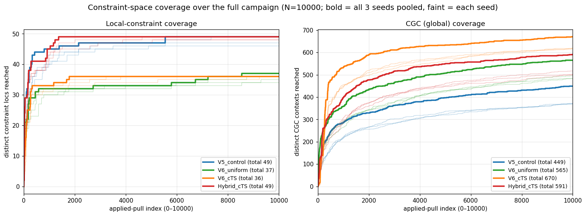
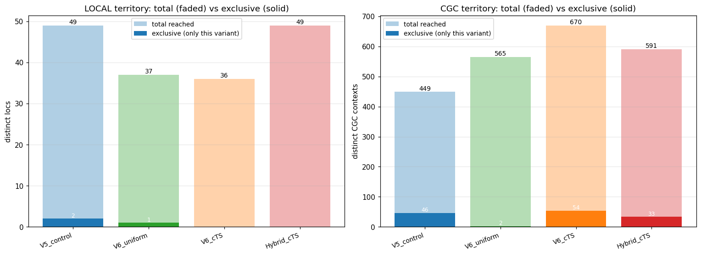
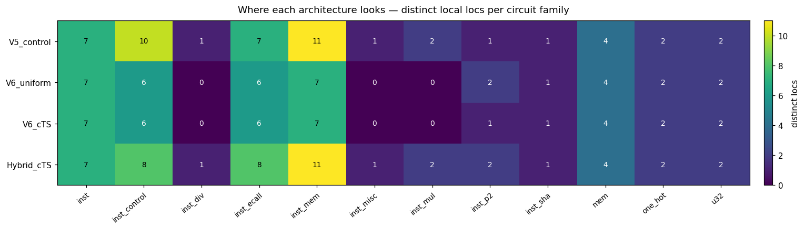

What this is. A measurement of how broadly and deeply each fuzzing architecture probes the RISC Zero zkVM's constraint system, on the complete IV.POS.8 four-variant campaign (all 3 seeds, N=10000 each — 12 runs total). It is the companion to D2.G's verdict/triage analysis: D2.G asks "did we find a soundness bug?"; this asks "how effectively does each architecture explore the space where soundness bugs would live?"
Why it matters. A soundness bug is an underconstraint — a place the circuit accepts a witness it should reject. To find one, a fuzzer must (1) reach that constraint and (2) probe it with a mutation it should reject. So broader, deeper constraint-space exploration is the leading indicator of bug-discovery potential — it is the closest measurable proxy we have for "how much of the attack surface did this architecture actually exercise." This notebook quantifies that proxy.
One caveat, up front: exploration ≠ bugs. D2.G's triage found 0 confirmed soundness candidates across the full campaign. "Reaches more territory" means "more chances to find a bug," not "found one." This notebook is about coverage of the search space, which is exactly the quantity you want to compare when no bug has yet been triggered.
The four variants (each N=10000, sha2-host, seeds 1234/1235/1236): | variant | mutation surface | scheduler | |---|---|---| | V5_control | A4 — post-execution witness/trace-cell mutation | cTS, constant floor | | V6_uniform | Arguzz — during-execution fault injection | round-robin (uniform) | | V6_cTS | Arguzz — same 11 kinds | constrained Thompson sampling | | Hybrid_cTS | A4 trace-cell + Arguzz execution-fault (15 kinds) | constrained Thompson sampling |
A4 edits the witness/trace after execution; Arguzz injects faults during execution. The hypothesis under test is that combining them (Hybrid) explores strictly more of the constraint space than either alone.
{
"local": {
"totals": {
"V5_control": 49,
"V6_uniform": 37,
"V6_cTS": 36,
"Hybrid_cTS": 49
},
"union": 52,
"common4": 34,
"exclusive": {
"V5_control": 2,
"V6_uniform": 1,
"V6_cTS": 0,
"Hybrid_cTS": 0
}
},
"cgc": {
"totals": {
"V5_control": 449,
"V6_uniform": 565,
"V6_cTS": 670,
"Hybrid_cTS": 591
},
"union": 1025,
"common4": 110,
"exclusive": {
"V5_control": 46,
"V6_uniform": 2,
"V6_cTS": 54,
"Hybrid_cTS": 33
}
}
}
We track two coverage curves because a zkVM constraint system has two structurally different kinds of constraint, and an underconstraint can hide in either:
.zir EQZ equalities, identified by constraint_loc). A local-loc is "reached" when some mutation makes that specific constraint fail. Intuition: which individual algebraic constraints did the fuzzer manage to trip?compressed_global_coverage) that bind the whole execution trace together. Intuition: which global, witness-internal structures did the fuzzer manage to perturb?They are not interchangeable — a mutation can move a CGC residue without adding any local loc, and vice versa — so together they span the surface a soundness bug could occupy. These two are the right primary curves precisely because they are the two orthogonal axes of the constraint space; anything else (e.g. a rarity-weighted variant) is a re-weighting of one of them, not a new dimension.
Each curve is the cumulative count of distinct locs / CGC contexts discovered as the campaign runs. The bold line pools all 3 seeds (a constraint counts once it is reached in any seed), so its endpoint is the campaign's total distinct reach — the exact number repeated in the territory bars below. The faint lines are the three individual seeds, showing run-to-run reproducibility (and why pooling reaches a bit more than any single run). Read three things: the endpoint (total territory), the slope (discovery rate), and the tail (flat = saturated; still-rising = headroom remaining).

What the curves say — the single clearest result in this notebook:
So the architectures explore complementary parts of the constraint system: A4 ↔ local, Arguzz ↔ global, Hybrid ↔ both.
The curves show how much territory each reaches. The next question is how much of it is theirs alone — the exclusive territory (locs / CGC contexts no other variant reached, pooled over all 3 seeds). Exclusive territory is the cleanest measure of a surface's unique contribution: shared territory means the others would have found it anyway, so it doesn't justify running that architecture.
Below: per variant, the total (faded bar) and its exclusive subset (solid bar), for local and CGC. This one view replaces the Venn/UpSet diagrams — it answers "how much is unique?" directly and, unlike a Venn, scales cleanly to all four variants.

What the bars say:
ControlLoadRootAndNonce@inst_control.zir:35 and :36), V6_uniform owns 1 (Poseidon0@inst_p2.zir:470), and V6_cTS / Hybrid own 0. Notably, even Hybrid misses all 3 of those exclusive locs — so Hybrid reaches 49 of 52. A plausible mechanism: splitting the bandit's budget across 15 kinds (A4 + Arguzz) instead of 11 slightly dilutes A4's per-kind sampling, so Hybrid doesn't always trip the rarest A4-only local constraints that pure-A4 V5 does. Takeaway: on the local surface the architectures are near-interchangeable — they all reach the same shared core; the differences are at the margins.Totals don't say which parts of the circuit get probed. Grouping the local locs by circuit family (the .zir component — mem, instruction-decode inst, u32/arithmetic, inst_control, inst_ecall, inst_mul/div, inst_p2 Poseidon, inst_sha, one_hot, …) shows each architecture's reach and, importantly, its blind spots — a family no variant probes is exactly where an underconstraint could sit undetected.

Reading the heatmap. Each cell = distinct local locs that variant reached in that circuit family (brighter = more). Two things to look for:
- The shared core vs the divergences. Most families (inst, mem, u32, one_hot, inst_sha) are covered near-identically by all four — the interchangeable local core. The divergences are concentrated in a few decode/control families (inst_control, inst_div, inst_mul, inst_misc): there the A4 variants (V5/Hybrid) reach more than the pure-Arguzz variants, which is the mechanistic "why" behind A4's local lead.
- Blind spots. No family is fully empty across all four on this guest, but the sparsely-covered ones (e.g. inst_p2 Poseidon, inst_div) are the natural targets for a future guest or new mutation kind — that is where coverage is thinnest and an underconstraint would be least likely to be tripped.
The exploration story (now firm across all 3 seeds): - The four architectures explore complementary regions: A4 owns the local per-row surface (49 locs vs Arguzz's 36–37), Arguzz owns the global permutation surface (V6_cTS 670 CGC vs A4's 449), and Hybrid is the only variant strong on both (49 local + 591 CGC). - This inverts the pre-campaign framing. The prior assumption (carried into ProG) was that A4's witness-internal mutations are what reach the global witness structures. The data says the opposite: measured as CGC contexts reached per local loc, the Arguzz variants reach ~2× more global structure than A4 — V6_cTS ≈ 18.6 (670/36) vs V5 ≈ 9.2 (449/49). So it is Arguzz, not A4, that is the global-reaching architecture, while A4 is the broad local explorer. The complementarity is real; the axis is local-vs-global, and the labels were backwards. (This is the empirical basis for flag F26.) - On exploration grounds this supports the Hybrid hypothesis. Hybrid is the broadest combined explorer — it matches A4's local breadth (49/52) and inherits most of Arguzz's global reach (591, second-highest CGC). It is the right precondition for the soundness hunt: maximal surface coverage. The one cost is that splitting the bandit budget across 15 kinds slightly dilutes A4's local depth (it misses the 3 rarest exclusive local locs), and its exclusive CGC (33) is modest because it mostly re-covers its parents' territory rather than opening new regions.
What this means for the campaign: with 0 confirmed soundness candidates found, the most useful comparison is exactly this coverage one — and it says the architectures are not redundant. Running A4 and Arguzz (i.e. Hybrid, or both separately) covers strictly more of the constraint space than either alone, which is the correct hedge when hunting for an unknown underconstraint.
Caveats (don't over-read):
1. Exploration ≠ bugs. 0 confirmed candidates so far; everything here is potential, not realized, bug-finding.
2. Sampling confound on CGC counts. V6_cTS's bandit over-samples high-arm-count kinds (e.g. INSTR_WORD_MOD), which inflates its raw CGC count somewhat. The per-family view and the local curve (where arm-count matters less) temper this; the gap is large enough (~1.5×–2×) that it is not purely an artifact, but treat exact CGC magnitudes as upper-ish estimates.
3. Single guest. All runs are sha2-host. Guest-specific families (inst_p2 Poseidon, BigInt) would change the family picture on another guest, and currently-dead A4 paging/cycle kinds may activate on a Poseidon-paging guest (IV.POS.9). The local-vs-global complementarity is expected to hold, but the absolute family coverage is guest-specific.